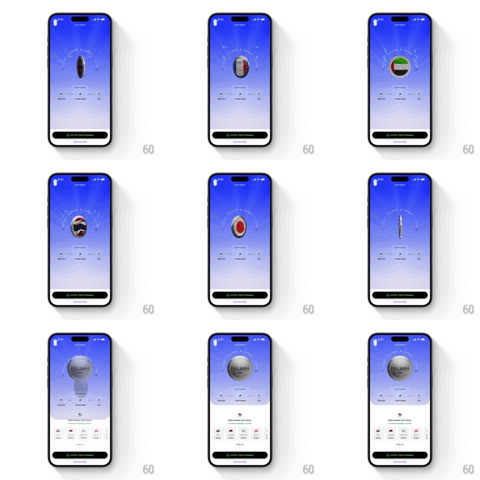

Media
Frame-by-frame

Rebuild this animation 1:1: Atlys' refer-and-earn coin - a 3D coin spins through country flags (USA, UK, UAE, Switzerland) before settling on the reward face as the earnings bottom sheet slides up.

Rebuild this animation 1:1: Atlys' refer-and-earn coin - a 3D coin spins through country flags (USA, UK, UAE, Switzerland) before settling on the reward face as the earnings bottom sheet slides up.
## Integration
Integration: stack-agnostic spec - springs given as stiffness/damping, timed motions as duration + curve; map every value to your framework and animation library of choice.
## Scene
Atlys rewards, electric blue gradient: "REFER & EARN" in an arc over the coin, the 3D coin at center, a stats row (40 Share link, 2 Friends Apply, 1 Earn), and a black "REFER YOUR FRIENDS" button. The coin faces: country flags on one side cycle during the spin, the reward amount ("0.5 LAKH") on the settle face. End state: a white bottom sheet ("Refer Travelers, Earn money") with per-country reward rows and T&C.
## Motion spec
Pattern: 3D coin spin cycling flag faces, settling on the reward face.
- On entry the coin flips in (rotateY 0 -> 360deg, 600ms, ease-out) and starts a continuous spin: rotateY looping at ~540deg/s, with the visible face swapping between country flags at each half-turn (US -> UK -> UAE -> Switzerland -> repeat).
- The coin floats with a gentle vertical bob (translateY +/-6px, 2s sine) and a moving specular highlight sweeping its edge as it turns.
- After ~3s the spin decelerates (ease-out over 800ms) and lands flat on the reward face ("0.5 LAKH" on a silver coin) with a small bounce (scale 1 -> 1.08 -> 1, 250ms) and a quick glint sweep.
- As it lands, the bottom sheet slides up (350ms, ease-out) dimming the header slightly; the sheet rows (flag, country, amount) stagger in (60ms apart, 250ms).
- The stats row and REFER YOUR FRIENDS button stay static throughout.
## Calibration
- The coin reads as a real 3D object: edge thickness visible near 90deg, faces never stretch.
- Flag faces are circular crops - full-bleed, no borders.
## Reduced motion
Coin crossfades between faces without rotation; sheet slides without dim.
## Don't miss
- The arc text "REFER & EARN" curves over the coin and never moves.
- The settle face is the money - the spin must visibly decelerate into it, never cut.